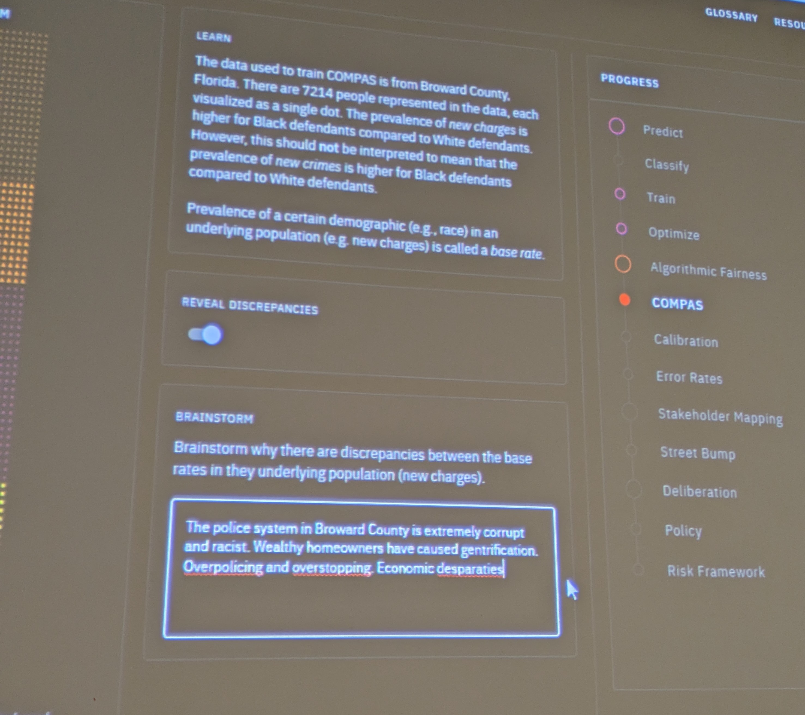
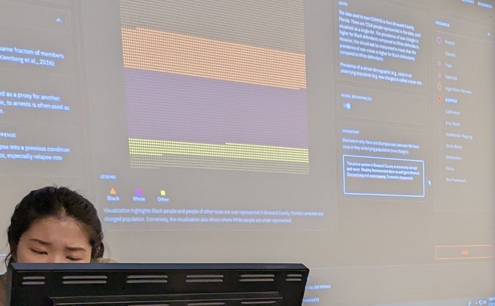
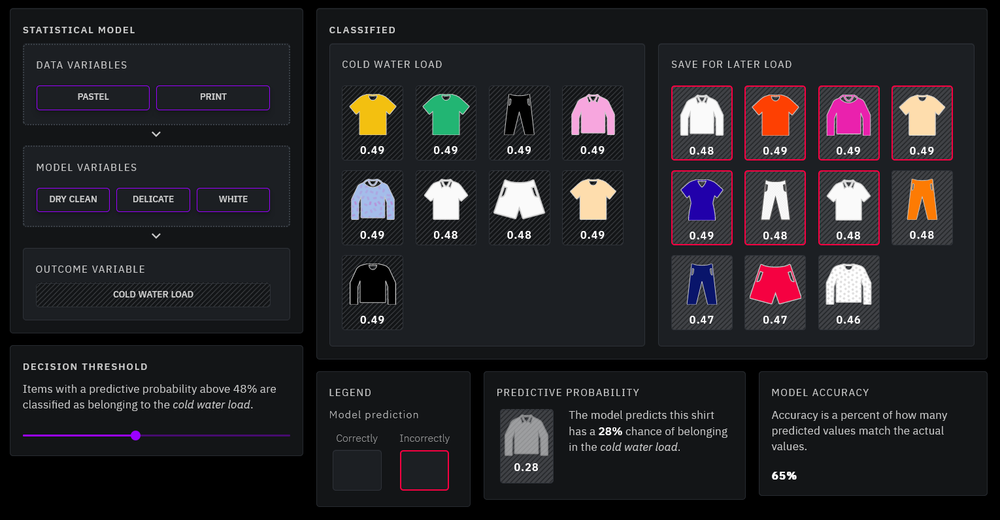
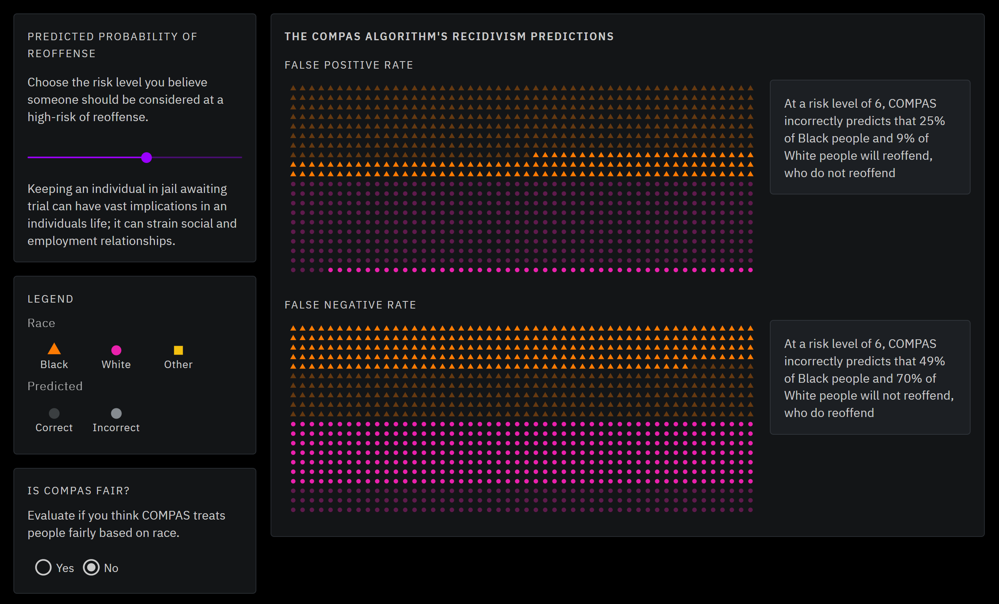
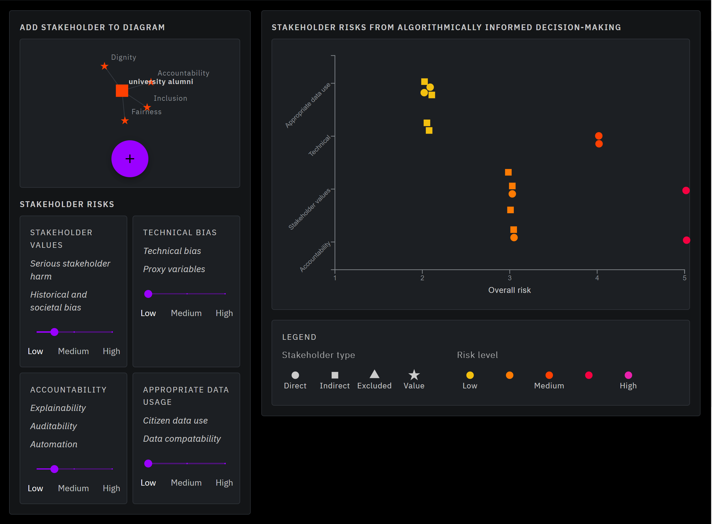

#AlgorithmicDecisionMaking
#Conversation
.png)
Today, algorithmic decision-making is used in every field; they evaluate prisoners for parole, triage patients in emergency rooms, and predict where and when services might be needed. Increasingly people are asked to evaluate algorithmic decision-making without the expertise to effectively assess the consequences. Risky Code is a digital workshop designed to increase the algorithmic literacy of workshop participants. The workshop uses information visualization to communicate underlying algorithmic mechanisms and engage participants in critical-thinking activities about algorithmic decision-making.

First, the workshop teaches participants about underlying algorithmic mechanisms and multiple definitions of algorithmic fairness. Next, participants are asked to pick a scenario where algorithmic decision-making is used and brainstorm multiple stakeholder groups. Finally, participants assess how algorithmic decision-making is risker for some stakeholder groups than others by employing a visual taxonomy of algorithmic risk.

This image on the left shows participants responses to the prompt brainstorm why there are underlying discrepancies between base rates in the underlying population. The image below shows a student facilitating the Risky Code workshop. The workshop is open source and intended to be navigated and facilitated by anyone interested in hosting a Risky Code workshop. Additional materials were developed to aid facilitators who may be interested in hosting a Risky Code workshop. All materials are hosted on google drive, making them easily accessible to a workshop facilitator. Additional materials included are a workshop summary and learning goals, the workshop script, a slide deck, a glossary of terminology, and pre and post-surveys.

Risky Code takes approximately is comprised of four learning modules, including, Algorithmic Prediction, Algorithmic Fairness, Stakeholder Mapping, and Deliberation. The first module, Algorithmic Prediction is intended increase participants understanding of underlying algorithmic mechanism.
The first module, Algorithmic Prediction, uses laundry as a metaphor to explain an algorithmic process. Workshop participants can update the statistical model and the predictive probability threshold on this page.

The next three modules, are intended to increase participants ability to think critically about the social implications of algorithmic decision-making. The second module, Algorithmic Fairness, is leads participants through a series of activities to learn about multiple definitions of algorithmic fairness.


In the next module, Stakeholder Mapping, participants brainstorm stakeholders and create a network to visualize where stakeholder values overlap and diverge. Finally, in the last module, Deliberation, each stakeholder that participants identified in the Stakeholder Mapping process is shown re-rendered as an individual rather than as a network. Participants assess the risk of four different metrics, including, appropriate data use, technical risk, stakeholder values, and accountability, for each stakeholder group. Once they adjust the sliders the add each stakeholder to the graph which shows indicates overall risk.

Mapping process is shown re-rendered as an individual rather than as a network. Participants assess the risk of four different metrics, including, appropriate data use, technical risk, stakeholder values, and accountability, for each stakeholder group. Once they adjust the sliders the add each stakeholder to the graph which shows indicates overall risk.
At the end of each module, Risky Code asks participants to take a moment to reflect on what they learned in the module. Participants are reminded of the module’s learning outcomes before they are presented with several questions to discuss and reflect on before moving to the next module. Reflection is an important part of the experiential learning process.